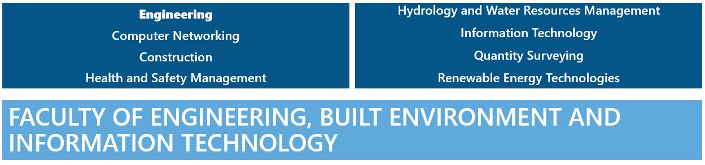
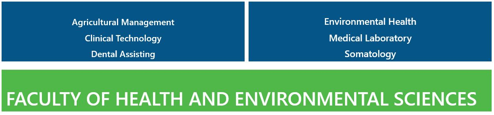
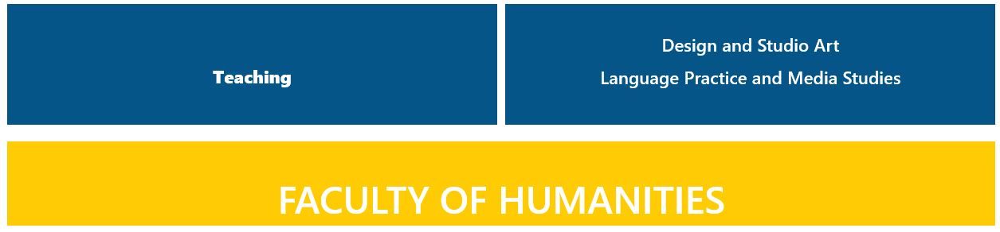
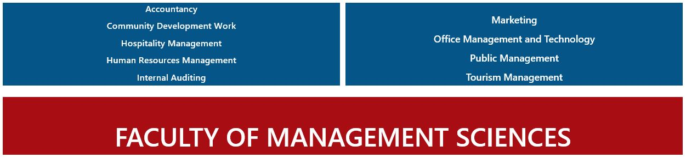
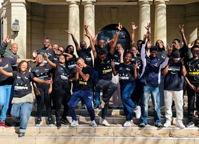

CUT has exceptional applied research and innovation projects. From the latest medical innovation prototyping to renewable energy.
This page is the Prospectus of CUT.
The 2026 Prospectus of Programmes
Skip to Postgraduate Programmes
First-time entering Qualifications | Undergraduate
If you are entering university for the first time or starting a new path, this section will guide you.
CUT's Grade 9 -12 subject choice guide for your chosen career (PDF)
Subject codes for tables below | |||
M | Mathematics | E | English |
ML | Mathematic Literacy | LO | Life Orientation |
PS | Physical Sciences | L | Languages |
LS | Life Sciences | A | Accounting |
AS | Agricultural Sciences | IT | Information Technology |
E | Economics | CS | Consumer Sciences |
BS | Business Studies | HS | Hospitality Studies |
Tips for reading the CUT programme page
The page has all the faculties in one place! You can browse through our entire selection of programmes.
The tables have 3 elements:
- The programmes (what NQF level it is, and the qualification type). How long you will spend studying this and with what type of qualification you will graduate.
- Minimum points (APS). Next, it is the minimum points needed to study the programme. Minimum points to study at CUT are 27. Some programmes need more than the minimum. Between 24 and 26 you may be eligible for the selection test but if the programme is full of applicants who meet the minimum and above, you are not going to be given the opportunity. Try to have more than the minimum. It should not be your target number.
- Next, we tell you the minimum level of achievement you need per school subject. In the table above the faculties, each subject is given M – Maths, E – English. The points you get for the percentage earned in a subject is at the top of the table. Add those numbers 4 + 3 + 4 to get your APS.

NQF 5 - 1 year full-time
NQF 6 - 2 years full-time
NQF 7 - 3 years full-time
For prospective students with NC(V) or N4, N5 and N6 qualifications
Programme | Minimum Points | Minimum Level of Achievement in Subject 1 (0-29%) | 2(30-39%) | 3 (40 -49%) | 4 (50-59%) | 5 (60-69%) | 6 (70-79%) | 7 (80-100%) Life Orientation will be given a score of 1 point. See Admission Points | ||||||||||||
| M | ML | PS | LS | E | LO | L | A | AS | E | BS | IT | ||
NQF 5 (HCert) | NQF 6 (Dip) | 27 | 3 | 6 | 4 | 4 | ||||||||
NQF 6 (Dip) | 27 | 3 | 6 | 4 | 4 | 3 | ||||||||
NQF 5 (HCert) | 27 | 4 | 4 | |||||||||||
NQF 5 (HCert) | 27 | 4 | 4 | |||||||||||
NQF 7 (BCon) | 32 | 5 | 5 | 5 | ||||||||||
NQF 7 (Bachelor) | 32 | 4 | 4 | 4 | 4 | |||||||||
NQF 6 (Dip) | NQF 7 (Bachelor) | 32
| 4 | 4 | 4 | 4 | 4 | |||||||
NQF 7 (Bachelor) | 32 | 4 | 4 | 4 | 4 | 4 | 4 | 4 | 4 | 4 | 4 | 4 | ||
NQF 7 (Bachelor) | 28 | 4 | 4 | 4 | 4 | |||||||||
NQF 6 (Dip) | 27 | 4 | 4 | 4 | ||||||||||
NQF 7 (Bachelor) | 32 | 4 | 4 | 4 | ||||||||||
NQF 6 (Dip) | 27 | 4 | 4 | 3 | ||||||||||
NQF 7 (Bachelor) | 32 | 5 | 4 | 3 | ||||||||||
NQF 5 (HCert) | 27 | 2 | 4 | 3 | ||||||||||

NQF 5 - 1 year full-time
NQF 6 - 2 years full-time
NQF 7 - 3 years full-time
NQF 8 - 4 years full-time
For prospective students with NC(V) or N4, N5 and N6 qualifications
Programme | Minimum Points | Minimum Level of Achievement in Subject 1 (0-29%) | 2(30-39%) | 3 (40 -49%) | 4 (50-59%) | 5 (60-69%) | 6 (70-79%) | 7 (80-100%) Life Orientation will be given a score of 1 point. See Admission Points | ||||||||
| M | ML | PS | LS | E | LO | L | A | AS | |
NQF 5 (HCert) | 27 | 4 | 4 | 4 | ||||||
NQF 6 (Dip) | 27 | 4 | 4 | 4 | 4 | 4 | 4 | 4 | 4 | 4 |
NQF 6 (Dip) | 27 | 4 | 4 | 4 | 4 | |||||
NQF 8 (Bachelor) | 30 | 4 | 4 | 4 | 4 | 4 | ||||
NQF 8 (Bachelor) | 30 | 4 | 4 | 4 | 4 | 4 | ||||
NQF 8 (Bachelor) | 30 | 4 | 4 | 4 | 4 | 4 | ||||

NQF 5 - 1 year full-time
NQF 6 - 2 years full-time
NQF 7 - 3 years full-time
NQF 8 - 4 years full-time
For prospective students with NC(V) or N4, N5 and N6 qualifications
Programme | Minimum Points | Minimum Level of Achievement in Subject 1 (0-29%) | 2(30-39%) | 3 (40 -49%) | 4 (50-59%) | 5 (60-69%) | 6 (70-79%) | 7 (80-100%) Life Orientation will be given a score of 1 point. See Admission Points | |||||||
| M | ML | PS | LS | E | LO | L | A | |
NQF 6 (Dip) | 27 | 4 | 4 | ||||||
NQF 6 (Dip) | 27
| 5 | 4 | 5 | |||||
NQF 7 (Bachelor) | 27 | 4 | 4 | ||||||
NQF 7 (Bachelor) | 27
| 4 | 4 | 4 | |||||
NQF 7 (Bachelor) | 27
| 4 | 4 | 4 | 4 | ||||
NQF 7 (Bachelor) | 27
| 4 | 4 | 4 | |||||
NQF 7 (Bachelor) | 27 | 4 | 4 | 4 | 4 | ||||
NQF 7 (Bachelor) | 27
| 4 | 4 | 4 | 4 | 4 | |||
NQF 7 (Bachelor) | 27 | 4 | 4 | 4 | 4 | ||||

NQF 5 - 1 year full-time
NQF 6 - 2 years full-time
NQF 7 - 3 years full-time
NQF 8 - 4 years full-time
For prospective students with NC(V) or N4, N5 and N6 qualifications
Programme | Minimum Points | Minimum Level of Achievement in Subject 1 (0-29%) | 2(30-39%) | 3 (40 -49%) | 4 (50-59%) | 5 (60-69%) | 6 (70-79%) | 7 (80-100%) Life Orientation will be given a score of 1 point. See Admission Points | |||||||
| M | ML | LO | L | A | AS | E | BS | |
NQF 5 (HCert) | 27
| 4 | |||||||
NQF 6 (Dip) | 27 | 4 | 4 | 4 | |||||
| NQF 6 (Dip) | 30 | 4 | |||||||
| Management | |||||||||
NQF 6 (Dip) | 27 | 4 | 4 | 4 | |||||
NQF 6 (Dip) | 27 | 4 | 4 | ||||||
NQF 6 (Dip) | 27 | 4 | |||||||
NQF 6 (Dip) | 27 | 4 | 4 | ||||||
NQF 8 (Bachelor) | 30 | 3 | 4 | 5 | 4 | ||||
NQF 8 (Bachelor) | 30 | 3 | 5 | 6 | 4 | ||||
NQF 6 (Dip) | 28 | 4 | |||||||
Postgraduate Programmes
Note: NSFAS does not fund postgraduate programmes.
Programmes below require an NQF 6 and above.
NQF 7 – 1 year full-time
NQF 8 - 1 year full-time; 2 years part-time
NQF 9 - 1 year (minimum - full-time); 2 years (minimum - part-time)
NQF 10 - 2 years (minimum - full-time); 3 years (minimum - part-time)
Faculty of Engineering, Built Environment and Information Technology | |||
NQF 7 (AdvDip) | NQF 8 (PGDip, Honours) | NQF 9 (Masters) | NQF 10 (Doctorate) |
Contact the department | Contact the department | ||
Contact the department | Contact the department | ||
Contact the department | Contact the department | ||
Faculty of Health Environmental Sciences | |||
NQF 7 (AdvDip) | NQF 8 (PGDip, Honours) | NQF 9 (Masters) | NQF 10 (Doctorate) |
Contact the department | |||
| Biomedical Technology | Biomedical Technology | ||
Contact the department | Contact the department | ||
| Therapeutic Services | Contact the department | Contact the department | |
Faculty of Humanities | |||
NQF 7 (AdvDip, PGCE) | NQF 8 (PGDip, Honours) | NQF 9 (Masters) | NQF 10 (Doctorate) |
Contact the department | Contact the department | ||
Faculty of Management Sciences | |||
NQF 7 (AdvDip, PGCE) | NQF 8 (PGDip, Honours) | NQF 9 (Masters) | NQF 10 (Doctorate) |
Views: 2946729

Enactus CUT crowned 2025/26 Enactus South Africa Summer Action Challenge Champions
Management Sciences Business Management CUT News Students Socio-economic DevelopmentCongratulations to the Enactus CUT team for emerging as champions in the 2025/26 Enactus Summer Action...
nGAP Doctoral journey advances circular innovation in construction and property development
Engineering, Built Environment and Information Technology CUT News Teaching and Learning Research and InnovationFor RB Nemakhavhani, completing his PhD in Construction Management at the University of Johannesburg...
CUT Welkom Campus hosts landmark Professorial Inaugural Address by Prof. Bekithemba Dube
Humanities CUT News Leadership Welkom Campus Teaching and LearningProfessor Bekithemba Dube delivered his Professorial Inaugural Address at the Welkom Campus, sharing...